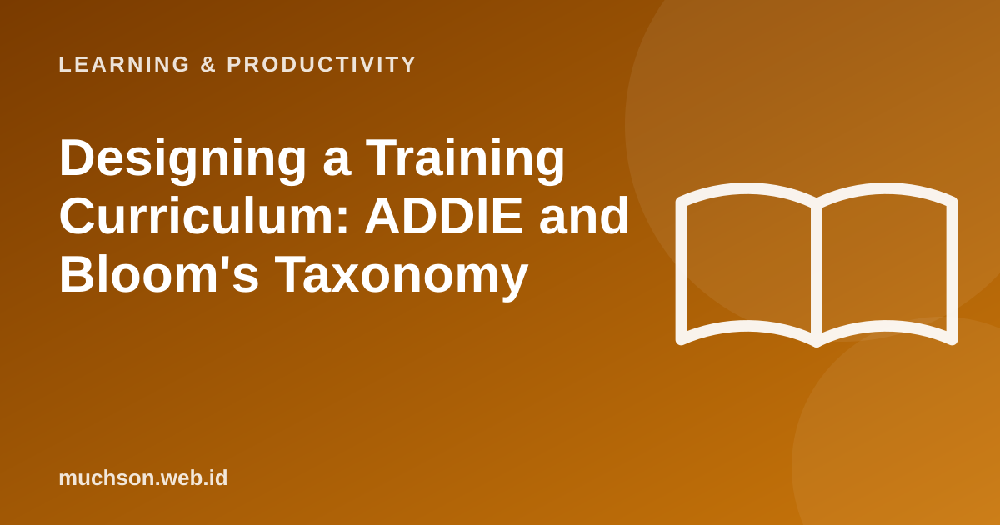

Home › Articles › Learning & Productivity
Learning & ProductivityDesigning a Training Curriculum: ADDIE and Bloom's Taxonomy
A good curriculum starts from a question: when it is over, what can participants do that they could not before? Not from a list of topics you want to teach. Two classic tools help answer it: ADDIE for the process, Bloom for the objectives.

ADDIE: five stages of design
Text description of the diagram
- Analyze: know the participants and the needs
- Design: plan the objectives and structure
- Develop: build materials and practice
- Implement: run the training
- Evaluate: measure results and improve
| Stage | Key question | Output |
|---|---|---|
| Analyze | Who are the participants, what do they already know, what is the performance problem? | A participant profile and the skills gap |
| Design | What are the learning objectives, and how are the order and assessment set? | Objectives, syllabus, assessment plan |
| Develop | What materials and practice are needed? | Modules, exercises, rubrics |
| Implement | How does the training run and who facilitates? | Training sessions |
| Evaluate | Were the objectives met and what needs to improve? | Results data and an improvement plan |
Bloom's taxonomy: writing measurable objectives
Text description of the diagram
- Create: Design, make, put together something new
- Evaluate: Judge, critique, decide
- Analyse: Compare, break down, find relationships
- Apply: Use a concept in a new situation
- Understand: Explain in your own words
- Remember: State facts and terms
Principles that keep a curriculum alive
With AI's help
AI can speed up drafting syllabi, questions and examples. The quality of the design still depends on your understanding of the participants and the objectives. Treat AI as a production assistant, not the lead designer.
FAQ
Is ADDIE still relevant?
Yes, as a process framework, often combined with more agile, iterative approaches.
How do I decide the length of the training?
Start from the objectives and the practice needed, not from the number of hours available. Then adjust for real constraints.
Must learning objectives always be written down?
Yes. Written objectives guide the material, the assessment and the communication with participants.